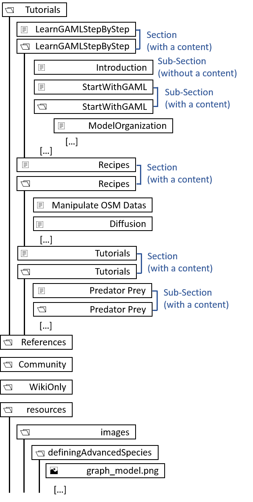
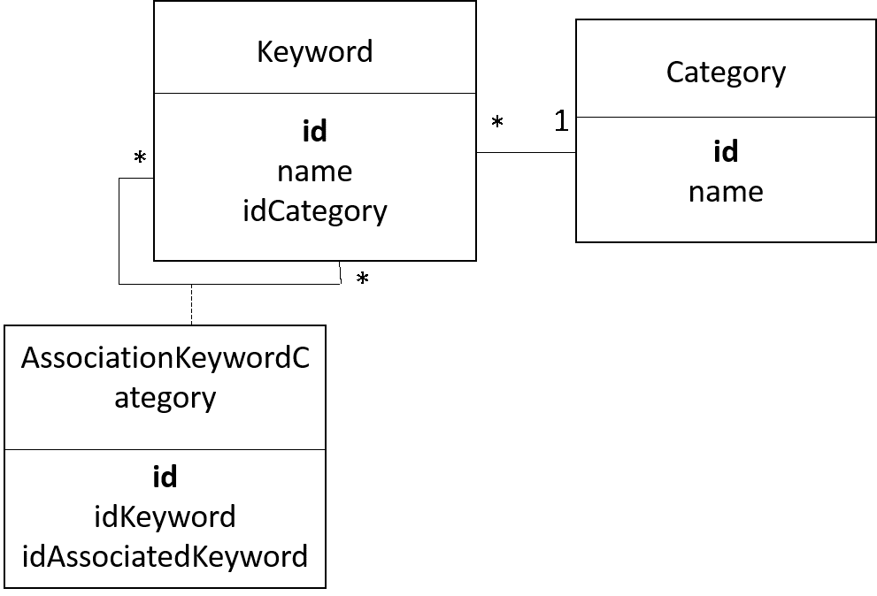
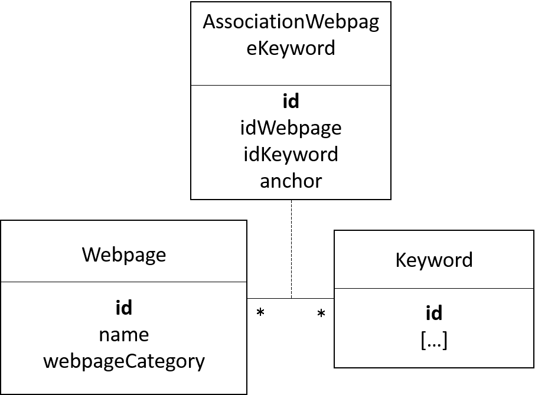

In this page, we will explain all about the convention we use to write and generate the website content and the wiki content. Since the release of GAMA 1.7, with the new GAMA website, we have two contents:
To generate automatically the documentation, the GAMA Git version is required. See Install Git version for more details.
Among all the GAMA plugins, only one is related to documentation generation:
msi.gama.documentation: it contains some useful java scripts to help you to write a correct documentation.In addition, the folder containing the wiki files is required. In the GitHub architecture, the wiki documentation is stored in a separate Git repository https://github.com/gama-platform/gama.wiki.git. A local clone of this repository should thus be created:
Githttps://github.com/gama-platform/gama.wiki.gitgama.wiki repository, and choose “Import projects”
gama.wikigama.wiki plugin should have been added.The “gama.wiki” plugin contains all the wiki content, and almost all the website content. It contains a folder content which contains the following folders:
For the rest of this document, the highest level of tree structure (“Tutorials”/”References”/”Community”/”WikiOnly”) will be named as tabs. The level just under will be named as sections, and the level under will be named as sub-section.
All this content is written using the markdown format.
All the images resources are included in the resources/images folder. They are actually under different sub-folders. From the markdown page, you can call the resource with the relative path resource/images/sub_folder/image_name.png.
If a section/sub-section contains one of several sub-division, then those sub-divisions will be stored in a folder with the name of the corresponding section/sub-section, and this section/sub-section folder will be associated with a markdown file with the same name (indeed, a section/sub-section has its own page).
If a section/sub-section has no sub-division, then this section/sub-section is simply defined with a markdown file containing the content wanted.

Notice that there is some content which is present only in the wiki (the “WikiOnly” content), some content present only in the website (the model library, most of the community content…). In fact, the wiki tree structure is determined by the file Sidebar, while the website tree structure is determined by the file _WebsiteTreeStructure.
Each markdown files has to start with a title in the markdown format (like # title). This is this title which will be displayed in the tree structure of the website.
Even if the repository how have a more complexe tree structure, you don’t have to (and you must not !) speficy the relative or absolute path to the target page, just naming the page will work : [text_displayed](the_name_of_the_md_file)
As already said in the previous paragraph, images have to be in an “resources/images/folder_name” folder next to your md file, so that you can write the relative path more easily.
Metadatas in content files are written as comments, with the following syntax:
[//]: # (name_of_the_medatada|value_of_the_metadata)
Medatadas are not displayed in the wiki and the website content. For the website generation, metadatas are used in order to build the database, most of all to manage the search engine, and the learning graph.
Here is the list of metadata we use in the content files:
keyword : will write an invisible anchor in this exact place in the website. When the user will do a research about this word, he can access directly to this anchor.
startConcept/endConcept : used to delimit a concept. The value of those two metadatas is the name of the concept. All the concepts are listed in the file “DependencyGraph”, in the content folder in your wiki repository.
The value of the keyword has to have this structure : keyword_category_keyword_name (indeed, several keywords can have the same name ! The type of the keyword has to be specified).
Here is the list of the several keyword categories : concept, operator, statement, species, architecture, type, constant and skill.
Example of metadata : [//]: # (keyword|concept_3D), or [//]: # (keyword|operator_int).
The value of the keyword have to be one of the values defined in the file learningConcept.xml.
Notice that a concept in the meaning of keyword is not the same as a concept (or learning concept) in the learning graph ! Please read the part concerning the database to learn more about it.
This part is not implemented yet, it is under construction.
This plugin is used to generate GAML documentation automatically in the markdown format, and copy paste the content to the wiki folder. The plugin is also used to generate the model library in the markdown format, with the source code, a quick description, and an image (screenshot). In the same time, the plugin generates a html page (an “abstract”) and put it directly in the model folder (in order to be loaded directly from GAMA).
The documentation plugin contains also 2 other scripts which helps to create content:
The learningGraphDatabaseGenerator script is used to generate the “nodesDatabase.js” file, which is read to visualize the learning graph. This script needs the “learningGraph.xml” file as input. Each learning concepts has an id, a name, a very short description, a position (position in x and y in %, between 0 and 1. This value is then multiplied by the coeff in the learningGraphDatabaseGenerator), and a list of prerequisite learning concepts. A category of learning concept (also defined in the learningGraph.xml file) has an id, a position (position in x and y), a position for the hallow (position in x and y of the big circle displayed when a category is selected), a size for the hallow, a color, a name, and the list of learningConcept associated.
The modelLibraryGenerator script is used to generate all the markdown files of the model library. This script
Format of the xml file to “tune up” the screenshot generation :
<xmlFile>
<experiment id="name_of_the_file_without_extention"+" "+"model_name"+" "+"experiment_name">
<display name="display_name_1" cycle_number="number_of_the_cycle_for_the_screenshot"/>
<display name="display_name_2" cycle_number="number_of_the_cycle_for_the_screenshot"/>
</experiment>
</xmlFile>
TODO
This repository contains in on hand the content auto generated by the documentation plugin, and in the other hand a handmade content. All the content is in the markdown format, organized through a specific tree structure, sometime containing metadatas.
This repository contains:
A keyword is a keyword that can be used for search, either manually (the user enters the wanted keyword in the searchbar of the website) or automatically (through the search tab in the navigation panel) A keyword in attached with a category (among the following names : concept, type, operator, statement, species, architecture, constant, action, attribute, skill, facet).
A keyword is composed of:
A cagegory is composed of:

An other database is used to join an alias to an existing keyword. Ex : the word “alias” will be changed as “die”.
An alias is composed of:
Note that an alias does not know the id of the keyword, but only the name of the attached keyword(s). Indeed, the alias “integer” will give the keyword name “int”, but several keywords correspond to the keyword name “int” (it can be the type “int”, or the cast operator “int”)

A webpage can be either a page of the model library, a page of the gaml reference, or an other page of the documentation.
A webpage is composed of:
The tables webpage and keyword are linked through an association table. This association table contains also an anchor (an anchor has an unique value) to the wanted paged.

Note that only the keywords which have the category concept, species, type, operator, skill and constant can be attached to a webpage.
The keywords which have the category action, attribute and facet forward to the attached keyword.
The keywords which have the category statement are attached to a webpage only if they are not attached to another keyword. If they are attached to another keyword (an architecture keyword), then the statement keyword forward to the attached keyword.
LearningConcept is used to build the learning graph (notice that a “learning concept” and a “keyword concept” is not the same thing !)
A LearningConcept is composed with:
A LearningConcept is linked to a webpage through an association table. This table is composed also with two anchors that are used to delimit the position of the learning concept in a page (the beginning position and the ending position).
A LearningConcept can be associated to other LearningConcepts through an association table, used to spefify the “prerequisite concepts”.
The database is loaded from a gathering of independent files. Some of those files are handmade written, other are generated automatically.
As explained in the explication of the documentation generation pages, the documentation generation script is used to generate the gaml references and the model library pages (in the markdown format with metadatas), but also to build two files category.txt and keyword.xml.
The file category.txt is a very simple file, listing the different keyword categories. This file will be used to build the Category table.
Format of the file:
concept, type, statement, species, architecture, operator, skill, constant, action, attribute, facet
The file keyword.xml is an xml file that contains all the possible keywords (all except some keywords written manually directly in the documentation pages). The GAML words can be found directly using the code of GAMA. The concept words can be found using the code of GAMA (thanks to the tag “category”) and also by using the tags in the header of the model files. This xml file will be used to build the Keyword and the AssociationKeywordCategory tables.
Format of the file:
<keyword id:keywordname_keywordcategory>
<name>keywordname</name>
<category>keywordcategory</category>
<associatedKeywordList>
<associatedKeyword>keywordId1</associatedKeyword>
<associatedKeyword>keywordId2</associatedKeyword>
</associatedKeywordList>
</keyword>
Note that:
The list associatedKeywordList contains only one element for the facet keywords, one of no element for the action or attribute keywords (none when the action/attribute is a built-in), several or no elements for the concept keywords, and none for the other type of keywords.
The id is build with the value of the attribute “name” and with the value of the attribute “category” for every keywords except the statement, facet, action and attribute keywords, which need also the value of the associatedKeyword linked. Ex : the id of the facet “torus” will be “facet_torus_statement_global”.
After the generation of the markdown content in the wiki repository, two other files have to be built manually : the files alias.txt and learningConcept.xml.
The alias.txt file contains all the connexions between alias and keyword name. It will be used to build the Alias table.
Format of the file :
aliasName1:remplacedWord1
aliasName2:remplacedWord2
kill:die
The learningConcept.xml file is used to list the learning concepts, and to connect them to their prerequisite concepts. It will be used to build the LearningConcept and the AssociationLearningConcept tables.
Format of the file :
<learningConcept id:learningConceptName>
<name>learningConceptName</name>
<prerequisiteList>
<prerequisite>learningConcept1</prerequisite>
<prerequisite>learningConcept2...</prerequisite>
</prerequisiteList>
</learningConcept>
Note that the value of the attribute “name” can be used as an unique id.
After copy-paste the content to the website folder, a script is used to build the database and to generate website content.
The Category, Alias, LearningConcept and AssociationLearningConcept tables are loaded easily from the files category.txt, alias.txt, and learningConcept.xml.
The Keyword and AssociationKeywordCategory tables are loaded from the keyword.xml file. Note that those two tables are not entirely loaded yet, because other keywords can be presents in the header of other files.
The markdown files are converted one by one into html format.
| When a metadata startConcept/endConcept is found (syntax : [//]: # (beginAnchor | name_of_learning_concept)), the metadata is replaced with an anchor in the page (with an unique id), and the AssociationWebpageConcept table is updated. |
| When a metadata keyword is found (syntax : [//]: # (keyword | name_of_keyword_category_name_of_keyword)), the metadata is replaced with an anchor in the page (with an unique id), and the AssociationWebpageKeyword table is updated (the Keyword and AssociationKeywordCategory are updated if the keyword does not exist yet in the table). |
ALL the concepts must be declared in the “IConcept” java class. If you want to add a new concept, please check before if your the concept you want to add cannot be remplaced by one of the existing concept. If it is the case, you can add your word as if it was an alias, pointing to the existing concept. Note that all the alias are listed in the alias.txt file. If you realy think that the concept has to be added, please add it to the IConcept file, and also to (one or several) of the lists CONCEPTS_NOT_FOR_GAML_REF, CONCEPTS_NOT_FOR_MODEL_LIBRARY, CONCEPTS_DEDICATED_TO_SYNTAX in the ConceptManager class if needed.
Most of the keywords of the website (used for the search) are managed automatically. But the “concepts” keywords have to be (partially) hand-made managed. You can add the concepts with 3 differents methods :
“Documentation” here designs all the content manually written in the wiki. All those pages can contain “concepts” through the metadata format :
[//]: # (keyword|concept_name_of_concept)
You can either :
Directly from the gaml files of the model library, you can add the concept you want through the “Tags” in the header of the model.
Exemple :
/**
* Name: 3D Display model of differents shapes and a special Object
* Author:
* Description: Model presenting a 3D display of differents shapes (pyramid, cone, cylinder, sphere and a teapot object) to represent the same agents but with
* different aspects. Five experiments are possible, one for each of the shapes presented previously. In each experiment, the agents move to create a big circle but flee
* from their closest neighbour.
* Tags: 3d, shape, neighbors
*/
Note that if you don’t want this model to have a page in the website, you can name it starting with the character _.
You can add a concept to a gaml word by using the syntax concept = { IConcept.MY_CONCEPT }.
Exemple :
@operator(value = "flip",
concept = { IConcept.RANDOM }
The following text has been automatically generated from “mainCheckConcepts”
______ last update : 2017/02/28 14:21:42
List of concepts to use for model library (except Syntax):
3d, agent_location, agent_movement, algorithm, architecture, asc, batch, bdi, camera, chart, clustering, color, communication, comodel, comparison, csv, database, date, dem, dgs, diffusion, dxf, edge, elevation, equation, fipa, fsm, geometry, gis, graph, graph_weight, graphic, grid, gui, headless, hydrology, image, inheritance, inspector, light, load_file, math, mirror, monitor, multi_criteria, multi_level, multi_simulation, neighbors, network, nil, node, obj, obstacle, osm, overlay, physics_engine, r, raster, regression, save_file, scheduler, serialize, shape, shapefile, shortest_path, skill, sound, spatial_computation, spatial_relation, spatial_transformation, sport, statistic, svg, system, task_based, test, text, texture, tif, topology, transport, txt, xml
List of concepts to use exclusively in Syntax models:
arithmetic, attribute, cast, condition, container, filter, list, logical, loop, map, matrix, string, ternary
List of concepts to use for GAML worlds:
3d, action, agent_location, agent_movement, algorithm, architecture, arithmetic, asc, attribute, batch, bdi, behavior, camera, cast, chart, clustering, color, communication, comodel, comparison, condition, constant, container, csv, cycle, database, date, dem, dgs, diffusion, dimension, display, dxf, edge, elevation, equation, experiment, file, filter, fipa, fsm, geometry, gis, graph, graph_weight, graphic, graphic_unit, grid, gui, headless, hydrology, image, inspector, length_unit, light, list, load_file, logical, loop, map, math, matrix, mirror, monitor, multi_criteria, multi_level, multi_simulation, neighbors, network, nil, node, obj, obstacle, optimization, osm, overlay, parameter, physics_engine, point, r, random, random_operator, raster, regression, save_file, scheduler, serialize, shape, shapefile, shortest_path, skill, sound, spatial_computation, spatial_relation, spatial_transformation, species, statistic, string, surface_unit, svg, system, task_based, ternary, test, text, texture, tif, time, time_unit, topology, transport, txt, type, volume_unit, weight_unit, xml
| Concept name | in Doc | in GAML Ref | in Model Lib | TOTAL |
|---|---|---|---|---|
| 3d | 2 | 17 | 39 | 58 |
| action | 3 | 5 | _ | 9 |
| agent_location | 1 | 21 | 0 | 22 |
| agent_movement | 0 | 2 | 23 | 25 |
| algorithm | 1 | 8 | 2 | 11 |
| architecture | 2 | 11 | 1 | 14 |
| arithmetic | 0 | 33 | 0 | 33 |
| asc | 0 | 2 | 2 | 4 |
| attribute | 2 | 6 | _ | 9 |
| autosave | 2 | _ | _ | 2 |
| background | 1 | _ | _ | 1 |
| batch | 3 | 8 | 4 | 15 |
| bdi | 1 | 51 | 0 | 52 |
| behavior | 3 | 7 | _ | 10 |
| camera | 1 | 1 | 2 | 4 |
| cast | 1 | 17 | 1 | 19 |
| chart | 0 | 5 | 5 | 10 |
| clustering | 0 | 5 | 3 | 8 |
| color | 1 | 17 | 4 | 22 |
| communication | 0 | 3 | 0 | 3 |
| comodel | 0 | 0 | 8 | 8 |
| comparison | 0 | 6 | 2 | 8 |
| condition | 1 | 7 | 0 | 8 |
| constant | 0 | 13 | _ | 13 |
| container | 1 | 60 | 1 | 62 |
| csv | 2 | 4 | 3 | 9 |
| cycle | 2 | 2 | _ | 4 |
| database | 1 | 3 | 17 | 21 |
| date | 1 | 48 | 2 | 51 |
| dem | 0 | 0 | 1 | 1 |
| dgs | 0 | 0 | 1 | 1 |
| diffusion | 1 | 1 | 14 | 16 |
| dimension | 2 | 35 | _ | 37 |
| display | 2 | 25 | _ | 29 |
| distribution | 1 | _ | _ | 1 |
| dxf | 0 | 2 | 1 | 3 |
| edge | 1 | 15 | 1 | 17 |
| elevation | 0 | 0 | 7 | 7 |
| enumeration | 1 | _ | _ | 1 |
| equation | 2 | 7 | 15 | 24 |
| experiment | 2 | 3 | _ | 5 |
| facet | 1 | _ | _ | 1 |
| file | 1 | 44 | _ | 47 |
| filter | 1 | 12 | 0 | 13 |
| fipa | 1 | 4 | 11 | 16 |
| fsm | 1 | 0 | 0 | 1 |
| geometry | 2 | 96 | 0 | 98 |
| gis | 0 | 5 | 24 | 29 |
| global | 1 | _ | _ | 1 |
| graph | 1 | 55 | 32 | 88 |
| graph_weight | 1 | 3 | 0 | 4 |
| graphic | 1 | 10 | 1 | 12 |
| graphic_unit | 1 | 6 | _ | 7 |
| grid | 4 | 10 | 33 | 47 |
| gui | 3 | 9 | 24 | 36 |
| halt | 1 | _ | _ | 1 |
| headless | 0 | 1 | 0 | 1 |
| hydrology | 0 | 0 | 1 | 1 |
| image | 0 | 4 | 0 | 4 |
| import | 1 | _ | _ | 1 |
| inheritance | 1 | _ | 1 | 2 |
| init | 3 | _ | _ | 3 |
| inspector | 1 | 2 | 1 | 4 |
| layer | 1 | _ | _ | 1 |
| length_unit | 0 | 9 | _ | 9 |
| light | 2 | 1 | 4 | 7 |
| list | 0 | 9 | 2 | 11 |
| load_file | 4 | 1 | 18 | 23 |
| logical | 1 | 7 | 0 | 8 |
| loop | 1 | 2 | 2 | 5 |
| map | 0 | 15 | 1 | 16 |
| math | 1 | 41 | 20 | 62 |
| matrix | 2 | 22 | 8 | 32 |
| mirror | 1 | 0 | 2 | 3 |
| model | 1 | _ | _ | 1 |
| monitor | 1 | 1 | 1 | 3 |
| multi_criteria | 0 | 4 | 1 | 5 |
| multi_level | 1 | 3 | 9 | 13 |
| multi_simulation | 1 | 0 | 2 | 3 |
| neighbors | 1 | 5 | 1 | 7 |
| network | 0 | 1 | 0 | 1 |
| nil | 1 | 0 | 0 | 1 |
| node | 1 | 20 | 1 | 22 |
| obj | 0 | 0 | 2 | 2 |
| obstacle | 0 | 1 | 3 | 4 |
| opengl | 3 | _ | _ | 3 |
| operator | 1 | _ | _ | 1 |
| optimization | 3 | 1 | _ | 4 |
| osm | 1 | 2 | 2 | 5 |
| output | 2 | _ | _ | 7 |
| overlay | 0 | 0 | 1 | 1 |
| parameter | 2 | 1 | _ | 3 |
| pause | 1 | _ | _ | 1 |
| permanent | 1 | _ | _ | 1 |
| physics_engine | 0 | 0 | 4 | 4 |
| point | 0 | 29 | _ | 29 |
| probability | 1 | _ | _ | 1 |
| pseudo_variable | 1 | _ | _ | 1 |
| r | 1 | 2 | 0 | 3 |
| random | 3 | 10 | _ | 13 |
| random_operator | 0 | 0 | _ | 0 |
| raster | 0 | 0 | 4 | 4 |
| reflex | 1 | _ | _ | 1 |
| refresh | 2 | _ | _ | 2 |
| regression | 0 | 2 | 1 | 3 |
| save_file | 0 | 2 | 8 | 10 |
| scheduler | 2 | 2 | 0 | 4 |
| serialize | 0 | 0 | 0 | 0 |
| shape | 3 | 21 | 1 | 25 |
| shapefile | 2 | 2 | 34 | 38 |
| shortest_path | 1 | 6 | 4 | 11 |
| skill | 2 | 17 | 42 | 61 |
| sound | 0 | 4 | 0 | 4 |
| spatial_computation | 0 | 73 | 7 | 80 |
| spatial_relation | 0 | 32 | 0 | 32 |
| spatial_transformation | 0 | 24 | 2 | 26 |
| species | 1 | 20 | _ | 21 |
| sport | 0 | _ | 2 | 2 |
| statistic | 0 | 66 | 5 | 71 |
| string | 0 | 27 | 0 | 27 |
| surface_unit | 0 | 4 | _ | 4 |
| svg | 0 | 2 | 0 | 2 |
| system | 1 | 11 | 0 | 12 |
| task_based | 1 | 4 | 0 | 5 |
| ternary | 1 | 2 | 1 | 4 |
| test | 0 | 4 | 2 | 6 |
| text | 2 | 10 | 0 | 12 |
| texture | 0 | 1 | 3 | 4 |
| tif | 0 | 2 | 1 | 3 |
| time | 2 | 20 | _ | 22 |
| time_unit | 0 | 13 | _ | 13 |
| topology | 3 | 9 | 4 | 16 |
| torus | 1 | _ | _ | 1 |
| transport | 1 | 5 | 6 | 12 |
| txt | 0 | 0 | 1 | 1 |
| type | 0 | 53 | _ | 53 |
| update | 1 | _ | _ | 1 |
| volume_unit | 0 | 5 | _ | 5 |
| weight_unit | 0 | 8 | _ | 8 |
| world | 1 | _ | _ | 1 |
| write | 1 | _ | _ | 1 |
| xml | 0 | 4 | 0 | 4 |